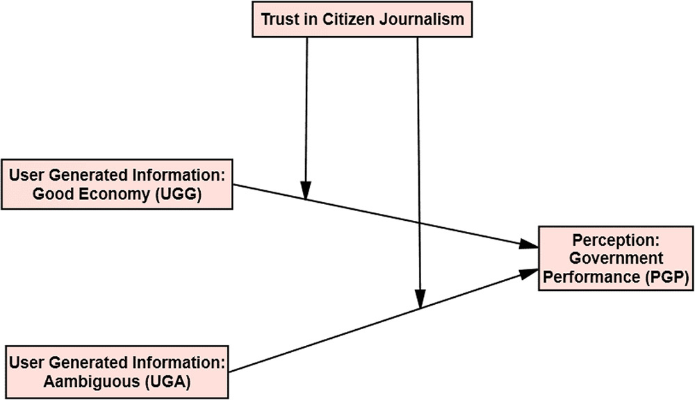
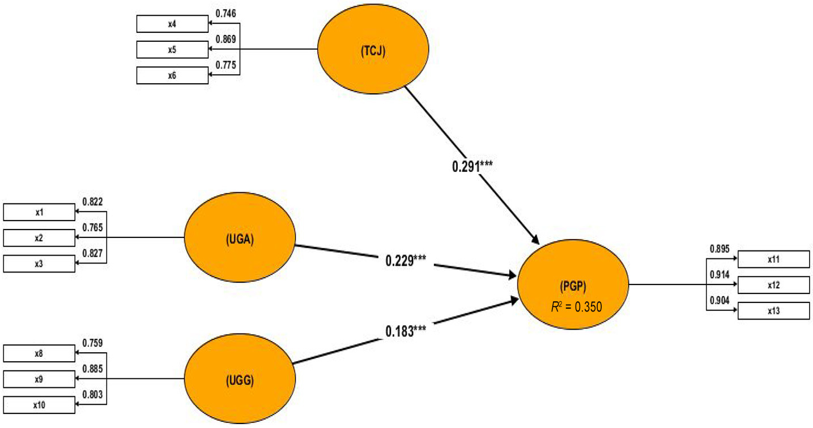
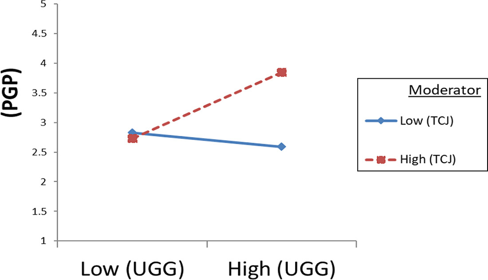
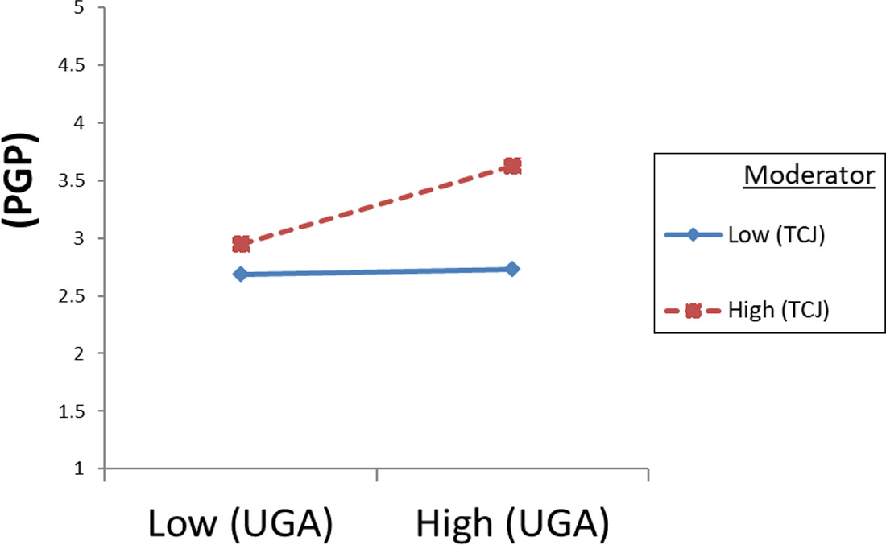

Raza 2022 Citizen Journalism COVID-19
Raza et al. (2022). Citizen journalism practices during COVID-19 in spotlight: influence of user-generated contents about economic policies in perceiving government performance
作者：Syed Hassan Raza, Ogadimma C. Emenyeonu, Muhammad Yousaf, Moneeba Iftikhar 機構：Bahauddin Zakariya University（巴基斯坦）、University of Sharjah（UAE） 期刊：Online Information Review（Emerald） 出版年份：2022
摘要
本研究檢驗 COVID-19 疫情期間，社群媒體上的公民新聞（citizen journalism）實踐如何影響公眾對政府績效的感知，並探討對公民新聞的信任（TCJP）在此關係中的調節角色。以巴基斯坦為研究場景，使用 ELM（精細加工可能性模型）作為理論基礎。
研究框架
- IV：用戶生成資訊（UGI）——包含正向政策（UGG）與模糊政策（UGA）
- DV：感知政府績效（PGP）
- 調節變項：對公民新聞實踐的信任（TCJP）
- 理論：ELM（Elaboration Likelihood Model）——信任增加訊息精細加工
研究結果
- UGC about good government economic policies positively predicts perceived government performance
- trust in citizen journalism moderates UGC effects on government performance perception
- citizen journalism content not perceived as fake news in Pakistani COVID-19 context
- ELM predicts source trustworthiness strengthens influence of UGI on government perception
方法
- Methods Note
- 線上問卷調查，N=464 巴基斯坦成人
- PLS-PM（PLS-SEM）於 ADANCO 軟體進行分析
- 四個 hypotheses 全部獲支持
統計結果摘要
| 路徑 | β | $f^2$ | 支持 |
|---|---|---|---|
| UGG → PGP | 0.22*** | 0.31 | H1 ✓ |
| UGA → PGP | 0.18*** | 0.23 | H2 ✓ |
| TCJP × UGG → PGP | 0.34*** | 0.46 | H3 ✓ |
| TCJP × UGA → PGP | 0.16*** | 0.29 | H4 ✓ |
| TCJP 直接效果 | 0.29*** | 0.37 | — |
| Model 2 $R^2$ | 0.490 | — | — |
相關概念：citizen journalism、user_generated_content、ELM、source credibility、Trust

Figure 1 呈現本研究的理論框架，說明 UGI（好經濟/模糊政策）→ PGP 的直接路徑，以及 TCJP 的調節效果。

Figure 2 呈現 PLS-SEM 全模型結果，包含路徑係數與顯著性。

Figure 3 呈現 TCJP 調節效果的 SEM 結果圖。

Figure 4 呈現斜率測試（slope test），說明 TCJP 高/低組在 UGI 對 PGP 影響上的差異。